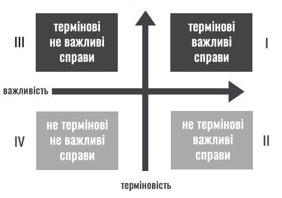

Для чого потрібна матриця Ейзенхауера?
Щоденні завдання і плани часто ми розподіляємо неправильно, непродуктивно вибудовуючи пріоритети і хронологію виконання. Таким чином можемо зробити купу справ і при цьому не зробити нічого з того, що наблизить до основної мети. У тайм-менеджменті це називається проблемою постановки цілей.
Наслідки такого нераціонального підходу можуть бути сумними — виснажлива робота і незрозумілі результати. Головна проблема не в продуктивності, а в тому, що завжди потрібно правильно розставляти важливість мети і, виходячи з неї, визначати денні / тижневі завдання. Матриця Ейзенхауера допоможе нам саме в цьому — швидко визначити ієрархію планів по пріоритетам.
Історія виникнення методу
Матриця Ейзенхауера — один із дієвих методів планування часу, який можна використовувати в роботі, навчанні, організації побутових справ. Цей метод названо на честь Дуайта Ейзенхауера, 34-го президент Сполучених Штатів Америки. Він керував країною у 1953-61 роках, увійшовши в історію, як один із найорганізованіших та найефективніших управлінців.
«У мене є два типи проблем: термінові та важливі. Термінові не завжди важливі, а важливі не завжди
термінові» — говорив Ейзенхауер.
Керуючись цим принципом визначення пріоритетності справ,
президент упорядковував свої щоденні робочі графіки.
На початку 90-х «друге життя» цьому методу подарував американський мотиваційний спікер Стівен Кові. У своєму бестселері «7 звичок надзвичайно ефективних людей» він детально описав практичні аспекти складання матриці управління часом, назвавши її «Чотири квадранти Кові».
У 2018 році науковці довели ефективність цього методу. Учасникам експерименту пропонували обрати порядок виконання справ. Більшість людей обирали термінові, а не важливі справи. Термінові справи обирали ті, хто позиціонував себе як зайнята ділова людина. Але коли учасникам дослідження запропонували обміркувати наслідки вибору пріоритетності виконання завдань, більшість наддали перевагу важливим справам.
Популярність методу Ейзенхауера обумовлена його універсальністю. Він однаково підходить усім, чиє життя проходить у режимі багатозадачності: керівникам компаній, студентам, офісним працівникам чи домогосподаркам.
Як правильно скласти і ефективно використовувати матрицю Ейзенхауера
Зовні матриця являє собою квадрат, розбитий на 4 блоки. Кожен блок іменується однією з перших 4-х букв латинського алфавіту (A, B, C, D) . Також для зручності їм можна присвоїти кольори, наприклад, A - червоний, B - жовтий, C - зелений, D - сірий.
Кожен квадрант має своє співвідношення важливості і терміновості. Розберемо їх призначення більш детально.
Якщо коротко - швидке сортування справ. Як? Дивимося на список завдань і по кожній відповідаємо собі на два простих питання:
- Це терміново? - Так / Ні
- Це важливо? - Так / Ні
Далі беремо аркуш паперу і ділимо його на чотири квадрати, в які будемо заносити відповіді на ці питання.
Квадрат А - терміново і важливо
Що сюди відноситься: завдання, які потрібно вирішити тут і зараз, щоб уникнути труднощів; справи, від яких залежить ваша мета; питання здоров'я.
Головне — щоб список справ в цьому квадраті не був величезним і постійним. Якщо в ньому половина (або навіть більше) списку завдань, то тут вже варто задуматися над своєю продуктивністю і переосмислити свою ефективність в цілому. Щоб в цьому секторі було менше завдань, необхідно гарненько опрацювати інші три.
Квадрат B - важливо, але не терміново
Що сюди відноситься: буденна важлива діяльність.
Підходячи до цих завдань, необхідно бути максимально уважними. Пропрацювавши квадрат В, вас чекає досягнення мети / цілей. Ці плани не кваплять і не вводять вас в стрес, а значить немає ніяких перешкод, щоб зробити все максимально точно. Головне - не затягувати, інакше завдання з цього квадрата можуть перейти в квадрат А.
Квадрат C - терміново, але не важливо
Що сюди відноситься: справи, що відволікають.
Ці завдання не допомагають наблизитися до основної мети, заважають зосередитися на головному і при цьому забирають багато енергії. Дуже легко переплутати справи з квадрата А з пунктами з квадрата С. Тому уважно перегляньте їх і коректно оціните важливість.
Квадрат D - не термінові і не важливі
Що сюди відноситься: улюблені справи, які по суті не несуть ніякої користі для досягнення мети.
Це перегляд фільмів, відео на Youtube, прослуховування музики, соцмережі, розмови по телефону і інші розваги. Робота мозку тут не особливо задіяна, а значить справи з квадрата D варто перенести на кінець дня.
У процесі використання матриці для професійних цілей ви побачите, що більшість завдань потрапляють у квадранти I і III. Найбільш значимий результат приносять дії з квадранта II, тому що це бізнес-цілі, які впливають на довгостроковий успіх бізнесу, але при цьому вони рідко класифікуються як термінові.
Найскладніше зрозуміти те, що відволікає вас від запланованого курсу. Але якщо ви впораєтеся з цією фундаментальною проблемою управління часом, то позбудетеся думок про даремно втрачені години. Задайте собі два питання, щоб визначитися з довгостроковими стратегіями в прийнятті рішень:
- Коли ви будете займатися важливими, але не терміновими завданнями?
- Коли ви зможете витратити час на вирішення важливих завдань, перш ніж вони раптово стануть терміновими?
Оформлювати матрицю можна різними кольорами. Виконані справи викреслювати чи позначати особливими відмітками. В кінця дня варто аналізувати ефективність планування, результати своєї роботи та фактори, що завадили здійснити задумане.
Висновки
Матриця Ейзенхауера — це відмінна модель для розстановки пріоритетів. За її допомоги ви зможете виділити найважливіші завдання, відсіявши все зайве. Якщо до застосування цього методу додати ще навичку тайм-менеджменту, то результат не змусить себе довго чекати.